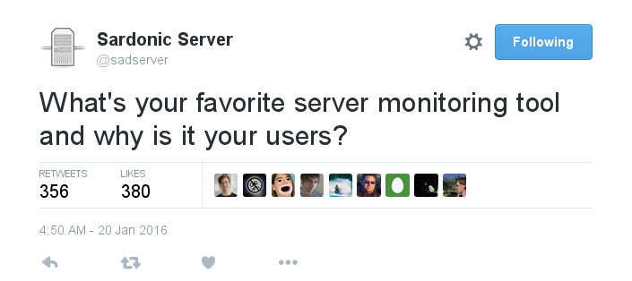

Manual monitoring
- Icinga 1.x (nagios compatible)
- New hosts?
- Decomissioned hosts?
- Blocked on wizards
- Demo setup

Automated monitoring
- Icinga2
- Auto discovery and removal
- Capacity?
- Single point of failure

Distributed monitoring
- Icinga2
- One master, multiple slaves
- Horizontal scalability
How?
- Audit manual setup
- Build parallel automated setup
- Progressive cutover
Audit manual setup
- Discover
- Categorize
- Consolidate
- Demo
Build a parallel automated setup
- Cheffed configs
- Configurable host sources
- Demo
Progressive cutover
- One set at a time
- Enable notifications on new
- Disable notifications on old
- Rinse, repeat, bake, kill
- Demo
Distributed setup
- Foundation ready
- Static distribution side effect
- Choose wisely for advanced features
Don't let this happen

Monitoring APIs
- Include a /healthstatus target
- Uniform URIs is a small ask
- HTTP status codes are a feature
- Use service discovery for services
- Don't write boilerplate for json - Demo